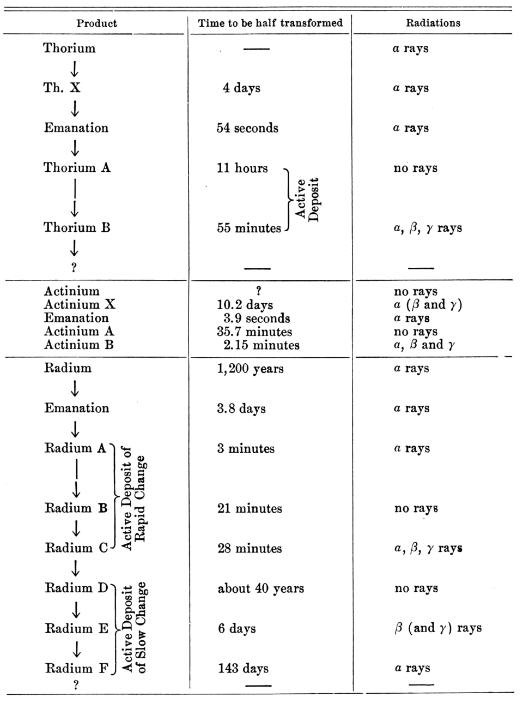

The elementary theory of exponential growth begins and ends with the rule "multiply by the same factor at every step". That rule is correct, but it is only the visible surface of a structure that runs through nearly every branch of mathematics. The exponential function is the unique solution of the simplest linear differential equation, the unique continuous homomorphism from the additive reals to the multiplicative reals, the limit of compound interest, the law of radioactive decay, the generic behaviour of linear systems near equilibrium, the mean behaviour of branching processes, the early phase of every epidemic, and the dividing line between tractable and intractable computation.
This course treats exponential growth and decay at the level of a graduate course in applied analysis. We state definitions precisely, prove the theorems we use, and track the hypotheses that make them true. The emphasis is on three recurring themes. The first is characterization: why the exponential is forced upon us by very weak assumptions (linearity, memorylessness, additivity). The second is comparison: how exponential rates dominate polynomial rates, how they are measured (growth exponents, spectral radii, Malthusian parameters, entropy), and how they are bounded (Grönwall). The third is saturation: how nonlinear feedback (logistic regulation, depletion of susceptibles, extinction) bends exponential curves and what survives of the exponential law when it does.
Notation. Throughout, exp(x) = eˣ, ln is the natural logarithm, ℝ₊ = [0, ∞), and for real functions f(x) ~ g(x) means f(x)/g(x) → 1. We write ekt when the exponent is a compound expression. A matrix norm ‖·‖ is always an operator norm, so that ‖AB‖ ≤ ‖A‖‖B‖. Probabilities are written P(·) and expectations E[·].
Prerequisites are a first course in real analysis (uniform convergence, the mean value theorem), linear algebra (eigenvalues, Jordan form) and elementary probability (generating functions, conditional probability).
In this course, you will:
- 1.Prove that y′ = ky has exactly one solution through each initial point, and characterize the exponential by its functional equation
- 2.Construct e as a limit, prove the compound-interest inequalities, and quantify continuous compounding
- 3.Model radioactive decay as a memoryless random process and solve decay chains
- 4.Prove that exponentials dominate every polynomial and organize growth rates into a hierarchy
- 5.Solve the inhomogeneous linear equation and prove Grönwall's inequality
- 6.Analyse the logistic equation: explicit solution, equilibria, stability and harvesting bifurcations
- 7.Build the matrix exponential and read stability of x′ = Ax from the spectrum
- 8.Study discrete models, linear recurrences and the Leslie matrix through Perron–Frobenius theory
- 9.Compute extinction probabilities of Galton–Watson branching processes
- 10.Derive the threshold, peak and final-size results of the SIR epidemic model
- 11.Separate polynomial, subexponential and exponential complexity in algorithms
- 12.Define exponential growth rates in general via Fekete's lemma, with applications to groups and entropy
Figures


Contents
The Equation y′ = ky — Existence, Uniqueness and Characterization Lesson 2
The Number e — Compound Interest and Continuous Compounding Lesson 3
Half-Life, Radioactive Decay and the Exponential Distribution Lesson 4
Exponential versus Polynomial — A Hierarchy of Growth Rates Lesson 5
Inhomogeneous Linear Equations and Grönwall's Inequality Lesson 6
The Logistic Equation — Saturation, Equilibria and Stability Lesson 7
Linear Systems and the Matrix Exponential Lesson 8
Discrete Models — Malthus, Linear Recurrences and the Leslie Matrix Lesson 9
Branching Processes — Exponential Growth or Extinction Lesson 10
Epidemics — the SIR Model, R₀ and the Final Size Lesson 11
Exponential and Subexponential Complexity Lesson 12
Growth Rates in General — Fekete's Lemma, Groups and Entropy Problem Set
60 problems Assessment
Randomly generated questions
Image sources
- Figure 1 · An Essay on the Principle of Population. By Thomas Robert Malthus. Public domain. From Wikimedia Commons: https://commons.wikimedia.org/wiki/File:An_Essay_on_the_Principle_of_Population.jpg
- Figure 2 · PSM V73 D062 Half life and radiation chart by rutherford. By Unknown author. Public domain. From Wikimedia Commons: https://commons.wikimedia.org/wiki/File:PSM_V73_D062_Half_life_and_radiation_chart_by_rutherford.png